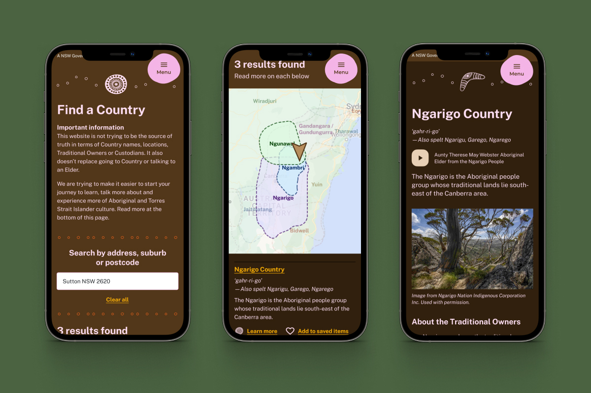
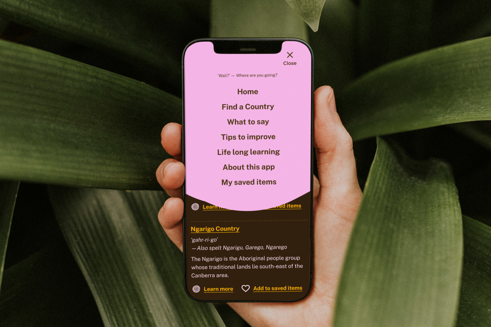
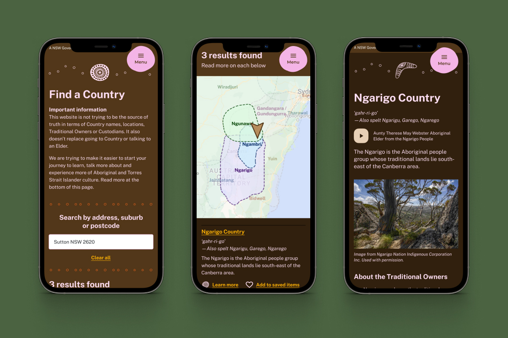
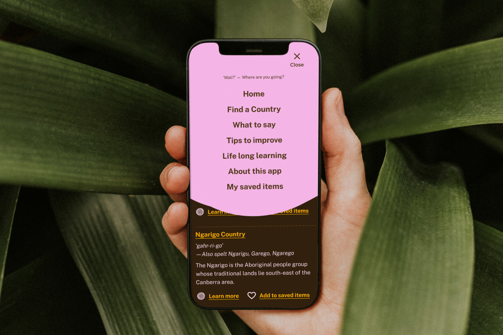

Connect with Country app
Web + iOS + Android apps
Why isn't there an app that could tell you about the Country you were on, and its Traditional Owners or Custodions?
That's what Holly Bartram, Kamilaroi/Gamilaroi woman and part of the 'Deadly Four' wondered aloud with her manager Rosie over some Korean BBQ one night. Thus began a 7 week project to design and launch exactly that.
Outputs
Links
Note: A process of consultation and collaboration is required for those in cultural authority to provide information about each Country. iOS and Android apps are built and awaiting launch.
 



Home to the world's oldest continuous civilisation, many Australians want to demonstrate their commitment to celebrating and valuing our First Nations cultures. One way to demonstrate this is through an Acknowledgement of Country.
Colonisation’s impact on First Nations Peoples is resounding and continuing. Borders, names, pronunciations, and spellings are nuanced, and in some instances, contested by Traditional Custodians.
Colonisation’s impact on First Nations Peoples is resounding and continuing. Borders, names, pronunciations, and spellings are nuanced, and in some instances, contested by Traditional Custodians.
For individuals that want to meaningfully engage with the practice, sourcing trustworthy information is difficult - and as we saw in our early stages of user research, oftentimes resulting in inaction.
We focused on the following vision;
How can we develop a resource that’s designed for nuance, and is inclusive to a diverse range of cultural authorities?
We focused on the following vision;
How can we develop a resource that’s designed for nuance, and is inclusive to a diverse range of cultural authorities?
To familiarise ourselves with the nuances of giving an Acknowledgement of Country, I organised a workshop from the amazing Acknowledge This! indigenous owned business for all staff at Future Friendly. These learnings formed the basis for all of the written content in the app; which I wrote and then we tested and iterated weekly through community consultation.
One of the greatest challenges on the project was how to relate where a user was to which Country they were on. Mapping itself isn't that hard; we've done quite a few projects at FF that rely on it. But finding a source of truth in terms of cultural authority was very hard indeed. We decided to use Native-Land.ca as it was community open-sourced and updated weekly. However as we would later learn, the very nature of borders and maps is deeply deeply nuanced in Aboriginal cultures.
One of the greatest challenges on the project was how to relate where a user was to which Country they were on. Mapping itself isn't that hard; we've done quite a few projects at FF that rely on it. But finding a source of truth in terms of cultural authority was very hard indeed. We decided to use Native-Land.ca as it was community open-sourced and updated weekly. However as we would later learn, the very nature of borders and maps is deeply deeply nuanced in Aboriginal cultures.
Community consultation was masterfully led by Holly and Mads on the team. The organistions we engaged during the project included: Aboriginal Affairs NSW; Acknowledge This!; AIATSIS; Museums of History NSW; NSW Aboriginal Land Council; NSW Department of Customer Service; NSW Public Service Commission; Orange Aboriginal Medical Centre and Reconciliation NSW. Involved in 3x weekly meetings, co-designs and workshops, and regular consultation sessions.
One of the biggest changes I made early on in response to seeing the design and content tested was rewrite all content into Easy English. My default college-level writing style was a real barrier to many people engaging with the content — I really think about that now on every project.
One of the biggest changes I made early on in response to seeing the design and content tested was rewrite all content into Easy English. My default college-level writing style was a real barrier to many people engaging with the content — I really think about that now on every project.
Ultimately through this process of consultation, we made the call to remove the visual overlay of the map. While we had lots of user evidence detailing how the map view added a lot to how people understood Country — its size, relation to other Country and places where Traditional Custodianship / Ownership overlapped.
But the boundaries themselves are often contested and in a state of flux. One of the biggest times of personal growth for me was to really listen to that feedback; put on hold the other solutions we had developed to try to get the map to work, and to acknowledge it was better to not focus on boundary lines (even when you try to use them as a teachable moment!).
But the boundaries themselves are often contested and in a state of flux. One of the biggest times of personal growth for me was to really listen to that feedback; put on hold the other solutions we had developed to try to get the map to work, and to acknowledge it was better to not focus on boundary lines (even when you try to use them as a teachable moment!).
We believe this app and framework for cultural knowledge is truly community-led. We spent a lot of time learning about the process of reconciliation, and wove that into the content of the app.
Some of the key design focuses include fostering relationships built on trust and respect; equal and equitable participation; incorporating Indigenous cultures and ways of knowing; addressing distinctive individual and collective rights and cultures; the right to self-determination; promoting truth-telling and historical acceptance; encouraging political, business and community institutions to support reconciliation; And for Aboriginal and Torres Strait Islander histories, cultures and rights to be part of a shared national identity.
Some of the key design focuses include fostering relationships built on trust and respect; equal and equitable participation; incorporating Indigenous cultures and ways of knowing; addressing distinctive individual and collective rights and cultures; the right to self-determination; promoting truth-telling and historical acceptance; encouraging political, business and community institutions to support reconciliation; And for Aboriginal and Torres Strait Islander histories, cultures and rights to be part of a shared national identity.
“The tool walks alongside users, equipping them with insights for respectful engagement with Aboriginal communities. It merges traditional yarning and storytelling with modern technology, fostering authentic connections to Aboriginal Culture.”
“Absolutely I would recommend this. Regardless of their cultural experience or knowledge, those different levels doesn’t make anyone any less Aboriginal. It’s a great resource for us to have... Plus also for the public sector... We can go on this same journey.”
“(The app is) trustworthy because of the sources and also working with Aboriginal people, groups and communities in the process.”
“It’s building on networks and breaking down barriers.”